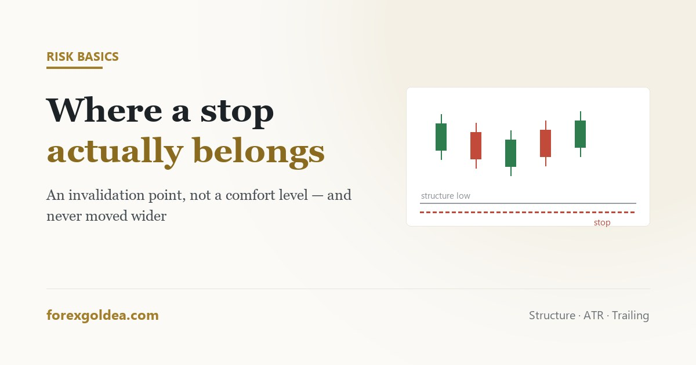

Where to put a stop loss, and why most sit in the wrong place

Most stop losses are placed at the point where the trader would like to stop losing money. That sounds reasonable and is exactly backwards. The market has no interest in your comfort level, and a stop set by feeling is a stop set at random — which is why so many traders watch price touch their level and then continue in the direction they originally chose.
In short a stop loss marks the price at which your reason for the trade is no longer true — not the amount you are willing to lose. Place it where the idea is invalidated (below the structure the trade relies on, or a volatility multiple away using ATR), then size the position so that distance costs an acceptable amount. Doing it in that order is the whole discipline. Avoid exact round numbers and the obvious swing high or low by a few dollars on gold, and move a stop only toward profit, never further away.
The stop is not a loss limit. It is an invalidation point.
Two traders take the same long. The first decides she is comfortable risking $50 and places her stop $50 below entry. The second identifies the level that, if broken, means the setup has failed — and places his stop just beyond it, then chooses a position size so that distance costs him a comfortable amount.
The first has told the market how much she feels like losing. The market does not receive that message. Her stop sits at an arbitrary price with no structural meaning, and it will be reached routinely by ordinary movement that has nothing to do with whether she was right.
The second has asked a question with an answer: at what price is this idea wrong? Everything else — size, risk, whether to take the trade at all — follows from that. If the invalidation point is too far away to size sensibly, the correct response is to skip the trade, not to move the stop closer.
Placement by structure
The most defensible stops sit just beyond a level that the trade's logic depends on.
- Long from support: below the low of the zone, not at it. If the level breaks, the reason for the trade has gone.
- Long on a breakout: below the consolidation the price broke out of. Back inside the range means the breakout failed.
- Long on a pullback in a trend: below the most recent higher low. A lower low means the trend structure has changed.
In each case the stop is answering the same question, and in each case it sits beyond the level rather than on it. Placing a stop exactly at the level you are relying on guarantees that a normal test of that level removes you.
Placement by volatility, which suits gold
Structure is not always obvious, and gold moves enough that a technically correct level can still be reached by ordinary noise. The Average True Range measures how far the instrument typically travels in a period, and placing a stop at a multiple of it — commonly 1.5 to 2 times the ATR — adapts the distance to current conditions automatically.
The practical effect is that stops widen when gold is volatile and tighten when it is calm, which is the correct direction of travel. A fixed $10 stop that was sensible in a quiet week is a guaranteed exit in an active one.
Because the resulting distance changes, position size has to change with it. If you widen the stop and keep the lot size, you have quietly doubled your risk — the arithmetic is in calculating lot size for XAU/USD.
Why round numbers are the worst place
Gold has a strong pull toward round levels — the hundreds and the fifties. Those are exactly the prices at which large numbers of stops accumulate, because they are the obvious places to put one.
Clusters of stops are liquidity. Price reaching into them, triggering exits and then reversing is not a conspiracy against you; it is the mechanical consequence of many orders sitting at the same visible price. The wick that removes you and reverses is a description of that structure, not of the market noticing your account.
The fix costs nothing: place stops a few dollars beyond the obvious level rather than at it. Slightly wider, slightly smaller position, materially fewer exits on moves that immediately reverse.
Percentage stops are backwards
“Risk 1% per trade” is sound advice about size that is frequently misapplied as advice about placement. The 1% belongs to the position calculation, not to the chart. Converting 1% of your balance into a price distance and putting the stop there produces a level with no relationship to the market at all.
The correct sequence is always: chart gives the distance, account gives the size. Keeping risk per trade constant is what makes a run of losses survivable; it is not what decides where the line goes.
Moving a stop: management or fear
There is one rule that resolves nearly every case. A stop may move toward profit. It may never move further away.
Moving a stop to break-even after price has travelled meaningfully, or trailing it below successive higher lows, is management: the invalidation point genuinely has moved, because the structure has. Widening a stop because price is approaching it is not management. It is the decision to take a larger loss than the one you already judged acceptable, made at the worst possible moment — and it is the mechanism behind most catastrophic single losses, which is a theme running through the psychology of losing money.
One caution on trailing too tightly: gold's pullbacks inside a trend are large. A trail that would be comfortable on a currency pair will remove you from a good gold position during a routine retracement. Trail behind structure, not behind price.
Reader questions
Where should I place my stop loss?
Just beyond the level that would invalidate your reason for the trade — then size the position so that distance is affordable.
How far should a stop loss be on gold?
Usually 1.5 to 2 times ATR, so the distance adapts to volatility. Gold needs more room than most beginners expect.
Why does my stop loss keep getting hit before price reverses?
Because it sits at an obvious level where many stops cluster. Place it a few dollars beyond the round number or swing point.
Should I use a trailing stop?
Yes, once a trade has moved in your favour — but trail behind structure. Tight trails get removed by gold's normal pullbacks.
Is it ever right to move a stop loss further away?
No. Widening a stop under pressure is how small losses become account-ending ones. Stops move toward profit only.
Can I trade without a stop loss?
Technically yes, but it defers risk rather than removing it — the loss simply keeps growing until margin forces it closed.
Where this leaves you
A stop loss is a statement about the market, not about your feelings toward money. Find the price that proves the idea wrong, place the order a little beyond it, and let the account decide the position size rather than the level. Do it in that order and the stops that do get hit will at least be telling you something true — which is the most a stop was ever supposed to do.
Affiliate disclosure: we earn a commission when you open and fund an account through our partner links, at no extra cost to you.